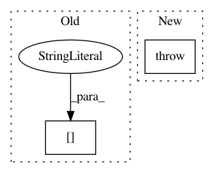

ca454c063d53d12ca94c9ed68ee16db79fbbd4a8,examples/mujoco_all_sac.py,,run_experiment,#Any#,199
Before Change
observations_preprocessor = None
policy_s_t_layers = policy_params["s_t_layers"]
policy_s_t_units = policy_params["s_t_units"]
s_t_hidden_sizes = [policy_s_t_units] * policy_s_t_layers
bijector_config = {
"scale_regularization": policy_params["scale_regularization"],
After Change
reg=1e-3,
)
else:
raise NotImplementedError(policy_params["type"])
algorithm = SAC(
base_kwargs=base_kwargs,
env=env,
In pattern: SUPERPATTERN
Frequency: 3
Non-data size: 2
Instances
Project Name: rail-berkeley/softlearning
Commit Name: ca454c063d53d12ca94c9ed68ee16db79fbbd4a8
Time: 2018-05-22
Author: kristian.hartikainen@gmail.com
File Name: examples/mujoco_all_sac.py
Class Name:
Method Name: run_experiment
Project Name: rail-berkeley/softlearning
Commit Name: f33e7b5201494eb52360efc14dbfc7e6eeb02096
Time: 2018-05-22
Author: kristian.hartikainen@gmail.com
File Name: examples/mujoco_all_sac_real_nvp_hierarchy.py
Class Name:
Method Name: run_experiment
Project Name: rail-berkeley/softlearning
Commit Name: 65878bf34c16e45b6ffaedef305fa260cf474498
Time: 2018-01-23
Author: haarnoja@users.noreply.github.com
File Name: softqlearning/misc/tf_utils.py
Class Name:
Method Name: get_configuration